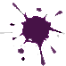

ЛИЧНОЕ ДЕЛО №16809
Статус:
Пол:
Возраст:
Рост:
Вес:
Личные данные:
Дон мафии
мужской
46 лет
178 см
82,5 кг
особо опасный, расчетливый, хладнокровный, безжалостный, двуличный, коварный, эгоцентричный, не женат
Является главой мафии. Первой ночью знакомиться с членами мафии (мафия должна знать, кто их главарь). Просыпается ночью два раза. Перый раз просыпается, чтобы искать комиссара. Дон знаками показывает ведущему того, как он считает, может быть комиссаром. Второй раз просыпается вместе с мафией, чтобы решить, кого этой ночью убрать. Дон – главарь организованной преступности, то он принимает окончательное решение насчёт того, кого будут убирать текущей ночью. Ночью, он может узнать, кто из горожан является комиссаром, поэтому, используя свои знания, играет в пользу мафии, убирая комиссара. Если люди мафии не могут прийти к единому решению, то за Доном мафии остаётся последнее слово: как он решит, так и будет. При необходимости, Дон может убрать члена мафии (или себя), например, чтобы запутать следствие.
Делопроизводитель:
/Свиридова Наталья
